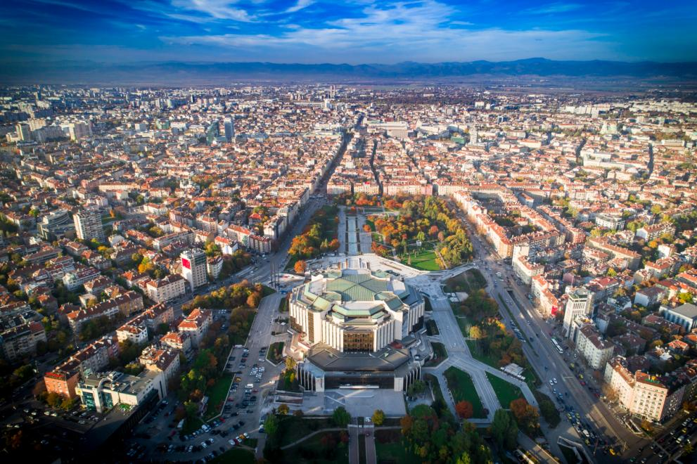
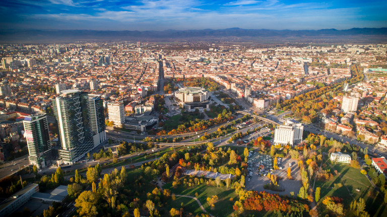

Bulgaria
София - столица на България
Со̀фия е столицата и най-големият град на България. Тя е на 14-о място по брой жители в Европейския съюз. Според ГРАО населението по настоящ адрес е 1 276 434 души, а по постоянен адрес е 1 376 397 души (към 15 март 2022 г.). Според резултатите от преброяването през 2011 г. населението на града е 1 291 591, което представлява 17,5% от населението на България. София е разположена в централната част на Западна България, в Софийската котловина и е заобиколена от 5 планини: Витоша и Плана от юг, Софийската планина (част от Стара планина) от север, Люлин от запад, и Лозенската планина (част от Ихтиманска Средна гора) от изток. Това я прави четвъртата по височина столица в Европа. Изградена е върху четирите тераси на река Искър и нейните притоци: Перловска и Владайска (Елешница). В централната градска част, както и в кварталите Овча купел, Княжево, Горна баня и Панчарево, има минерални извори. Климатът на София е умерено континентален.София е основен административен, индустриален, транспортен, културен и образователен център на страната, като в нея е съсредоточено 1/6 от промишленото производство на България. Тук се намират също така Българската академия на науките, много университети, театри, кина, както и Националната художествена галерия, археологически, исторически, природонаучни и други музеи. На много места в центъра на града са запазени видими археологически паметници от римско време.
София носи името на късноантичната раннохристиянска съборна[5] църква на града „Света София“ или „Светата Премъдрост Божия“ (едно от имената на младия Исус Христос)). Празникът на града обаче е на 17 септември, когато Православната църква отбелязва Светите мъченици София, Вяра, Надежда и Любов. Датата е определена за Празник на София с решение на Столичния общински съвет от 25 март 1992 г.
 